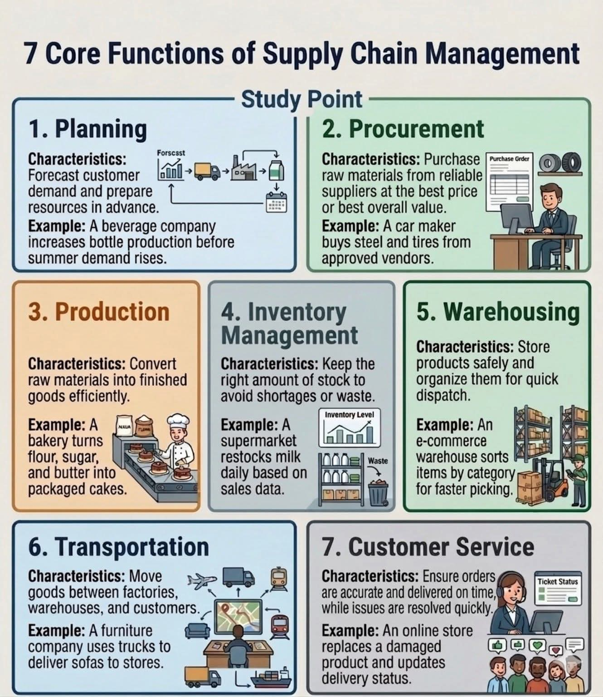

Bandung, awal musim kemarau. Di kawasan Dago yang sejuk, empat orang muda berkumpul di ruang kerja bersama yang mereka sebut “The Supply Loft”. Lantai kayu jati, jendela besar, dan papan tulis penuh notasi. Mereka lulusan Teknik Industri ITB dan Unpar, kini merintis konsultan rantai pasok butik: LogiQal Artha.
Planning Nayla Kusumawardhani — perempuan, 28 tahun, lulusan Teknik Industri dengan pujian. Parasnya teduh, namun pikirannya setajam algoritma peramalan. Ia dikenal sebagai “matematikawan romantis” di antara mereka. Nayla gemar sekali matematika; baginya, integral dan deret Fourier adalah puisi. Di mejanya selalu ada buku “Supply Chain Analytics with Python” dan novel Pramoedya. Dialah yang sejak awal menekankan bahwa tanpa planning yang presisi, rantai pasok hanya onggokan barang.
Rangga Adiwangsa — 30 tahun, postur atletis, berkacamata bundar tipis. Spesialis Procurement dan negosiator ulung. Ia percaya bahwa relasi dengan pemasok harus seperti orkestra: harmoni dan ritme. "Harga terbaik itu penting, tapi nilai keseluruhan lebih bermakna," begitu katanya sambil menyeruput kopi Arabika Priangan. Rangga jago membaca karakter vendor, warisan dari pengalamannya bekerja di perusahaan otomotif.
Bimo Arrafi — 29 tahun, sang arsitek produksi. Pendiam, tangannya selalu mencoret diagram alir, menghitung takt time. Ia ahli Production & Inventory. Bimo yang mengelola konversi bahan baku menjadi produk jadi dengan efisiensi tinggi. Di ponselnya, aplikasi simulasi pabrik selalu terbuka. Bimo gemar berjalan kaki dari rumahnya di Ciumbuleuit ke kantor, mengamati ritme kota sebagai metafora line balancing.
Garin Prakoso — 31 tahun, paling senior. Fokus pada Warehousing, Transportation & Customer Service. Garin berperawakan tinggi, suaranya berat tapi menenangkan. Ia pernah memimpin proyek distribusi di pelabuhan Tanjung Priok sebelum kembali ke Bandung. Garin menguasai seluk-beluk last mile delivery. Ia sering berkata, “Gudang bukan sekadar tempat menyimpan, melainkan pusat syaraf kecepatan.”
Hari itu, mereka memperoleh proyek besar: merancang ulang rantai pasok untuk Kajima Nusantara Food, produsen minuman herbal dan sirup khas Jawa Barat yang hendak ekspansi nasional. Direktur Kajima, seorang perempuan visioner, ingin memastikan distribusi ke seluruh Jawa dalam waktu kurang dari 36 jam. Pertemuan perdana diisi dengan diskusi intens.
“Kita harus mulai dari sini,” ujar Nayla, menunjuk gambar di layar — persis diagram yang terpampang di sudut ruangan: 7 fungsi inti rantai pasok. “Mari kita periksa perencanaan permintaan dulu. Ramalan permintaan sirup leci dan jahe merah sangat musiman. Saya sudah buat model ARIMA dan eksponensial ganda dengan faktor cuaca.” Nayla menunjukkan lembar penuh angka dan residual. Matanya berbinar. Bagi Nayla, matematika adalah lentera.
Rangga menyela, “Tapi perencanaan tanpa pengadaan yang tangguh sama saja omong kosong. Pemasok gula aren organik kita sekarang cuma dua. Kalau salah satu gagal panen? Saya akan mapping pemasok baru di Tasikmalaya dan Banjarnegara. Procurement: kita harus dapat harga terbaik, kualitas terjaga. Seperti contoh di gambar: perusahaan minuman menambah stok sebelum permintaan musim panas.” Ia menunjukkan sketsa kontrak value‐based.
Bimo yang sedari tadi diam, tiba-tiba angkat bicara dengan logat Sunda halus, “Efisiensi produksi. Waktu siklus kita sekarang 22 menit per batch. Saya usul tata ulang lini pakai metode heijunka. Konversi bahan baku jadi barang jadi harus lean. Seperti bakery yang mengubah tepung menjadi kue kemasan.” Bimo menunjuk contoh di infografis. Garin mengangguk dan menambahkan bahwa inventory harus tepat: tidak kurang, tidak lebih. “Supermarket restok susu berdasarkan data penjualan. Sama. Kita pakai sistem min‐max dengan safety stock dinamis.”
Perdebatan sehat terjadi hingga malam. Nayla kembali menekankan bahwa di balik semua fungsi, ada customer service sebagai wajah akhir. “Kalau pesanan akurat dan sampai tepat waktu, loyalitas terbentuk. Contoh yang rusak diganti cepat — seperti di catatan gambar.” Garin mengiyakan. Mereka sepakat menggunakan peta tujuh fungsi itu sebagai kerangka kerja.
Nayla kemudian mendemonstrasikan kemampuan matematikanya yang memukau. Ia menghitung bullwhip effect potensial menggunakan pendekatan transformasi Z dan statistika Bayesian. “Lihat, jika variansi permintaan di tingkat retail 5%, maka di level pabrik bisa membengkak hingga 18% tanpa koordinasi. Ini harus diredam dengan berbagi informasi real‐time.” Rangga, Bimo, dan Garin menyimak dengan takjub. Mereka memang paham, tetapi cara Nayla menyajikan angka selalu indah—ia menyebutnya “estetika stokastik”.
Seminggu kemudian, implementasi dimulai. Nayla membangun dasbor peramalan berbasis machine learning (ia menggunakan Python dan library Prophet). Setiap pagi, layar di kantor menampilkan prediksi permintaan 30 hari ke depan dengan selang kepercayaan 95%. Tim Kajima sempat ragu, tetapi setelah dua siklus, akurasi di atas 92% membuat mereka percaya.
Rangga terbang ke beberapa kota untuk mengaudit pemasok. Ia berhasil menegosiasikan kontrak jangka panjang dengan petani gula aren, sekaligus memperkenalkan insentif kualitas. “Procurement yang cerdas akan memikirkan nilai total, bukan sekadar harga per kg,” katanya dalam laporan. Ia juga menerapkan sistem vendor managed inventory untuk bahan kemasan.
Sementara itu, Bimo merombak lantai produksi. Dengan bantuan mahasiswa magang, ia menerapkan papan andon digital sederhana. Tingkat cacat turun 17% dalam enam minggu. Ia sering berdiskusi dengan Nayla tentang model antrean di stasiun kerja (teori queueing). Bimo bukan ahli matematika murni, tetapi ia menghormati kecintaan Nayla pada angka. “Mbak Nay, antrean M/M/1 itu asyik juga ya,” godanya suatu siang. Nayla tertawa kecil, “Itu baru permukaan. Nanti saya kenalkan proses Markov tersembunyi.”
Garin paling sibuk di lapangan. Ia merekrut mitra logistik lokal, menyewa truk berpendingin, dan mendesain ulang tata letak gudang dengan sistem cross‐docking. Di gudang utama Bandung, ia memasang papan visual 7 fungsi rantai pasok agar semua staf mengingat peran masing-masing. “Warehousing bukan sekadar menyimpan, tapi mengalirkan. Setiap barang punya ritme,” katanya saat memberi pengarahan. Pengiriman menggunakan algoritma rute dinamis yang dikembangkan oleh … tentu saja, Nayla. Dengan bantuan open source routing machine dan data lalu lintas real‐time, truk dapat menghindari kemacetan Cipularang.
Klimaks kolaborasi mereka terlihat pada momen puncak permintaan Lebaran. Pesanan sirup dan minuman herbal melonjak 240%. Sistem yang mereka bangun tidak goyah. Stok tersedia, produksi on schedule, gudang tidak penuh berlebihan karena aliran barang terjaga, dan tingkat pemenuhan pesanan mencapai 99,3%. Bahkan, ada satu kejadian ketika sebuah palet rusak saat pengiriman ke Semarang — tim layanan pelanggan (yang sekarang terintegrasi dengan Garin) langsung mengirim pengganti dalam 8 jam, plus voucher sebagai permintaan maaf. Pelanggan justru terkesan.
Suatu sore selepas proyek besar, keempatnya duduk di balkon Loft, menatap langit Bandung yang mulai jingga. Nayla menuang teh untuk semuanya. “Aku ingat pertama kali kita melihat gambar ini,” katanya, merujuk pada diagram supply_chain.jpg yang tercetak rapi di dekat pintu. “Tujuh fungsi terlihat sederhana, tapi paduan di antaranya rumit. Seperti matematika—ada struktur, tapi keindahannya sering tersembunyi.” Rangga menimpali, “Betul. Seperti negosiasi; kadang perlu intuisi, tapi di baliknya ada game theory.” Bimo mengangguk, “Dan produksi adalah tentang laju yang stabil, seperti turunan fungsi yang mulus.”
Garin mengangkat cangkirnya, “Kita buktikan: rantai pasok bukan hanya tentang barang. Ia adalah hubungan, komitmen, dan kecerdasan kolektif. Dan kita, empat orang dengan latar dan keahlian berbeda, bisa membawa perubahan kecil yang berdampak besar.”
Mereka lalu terdiam, menikmati senja. Nayla membuka laptop dan menulis catatan di jurnal pribadinya: “Fungsi ke‐8 mungkin tidak tertulis: kolaborasi yang dilandasi kepercayaan. Dan matematika adalah bahasanya.”
Beberapa bulan kemudian, cerita sukses Kajima menjadi studi kasus. Mereka diundang menjadi pembicara di seminar nasional rantai pasok di Jakarta. Materi presentasi mereka selalu menyertakan gambar “7 Core Functions” tersebut, sebagai penghormatan pada fondasi ilmu teknik industri. Nayla, dengan blazer abu-abu dan gaya bicara yang tenang, memaparkan model peramalan hybrid. Rangga menjelaskan pentingnya kemitraan strategis. Bimo mendemonstrasikan simulasi lini, dan Garin menutup dengan manajemen distribusi yang resilien.
Suatu malam, di sela-sela pengerjaan proyek baru untuk UMKM kopi, keempatnya kembali berdiskusi di ruang tengah. Gambar supply_chain.jpg masih terpajang, kali ini diberi bingkai kayu jati buatan perajin lokal. Di bawahnya terdapat coretan tangan Nayla: “Perencanaan adalah harapan, pengadaan adalah komitmen, produksi adalah transformasi, inventori adalah kesabaran, pergudangan adalah kesiapan, transportasi adalah gerak, dan layanan adalah senyum di ujung.”
Bimo tiba-tiba mengeluarkan papan catur. “Istirahat sejenak, yuk. Kita uji strategi,” ajaknya. Rangga dan Nayla langsung setuju. Garin yang biasanya serius pun ikut duduk. Selama permainan, mereka tak henti mengaitkan langkah demi langkah dengan prinsip rantai pasok. Saat Nayla melakukan langkah berani mengorbankan benteng, ia berbisik, “Ini seperti safety stock: ada risiko, tapi perlu untuk memenangkan permainan panjang.” Semua terbahak. Memang begitulah mereka; setiap momen bisa menjadi metafora manajemen rantai pasok.
Di akhir pekan, mereka sering berjalan-jalan ke pusat kota Bandung, menikmati arsitektur kolonial dan kedai kopi. Tokoh wanita, Nayla, selalu menjadi pusat perhatian bukan karena gender, melainkan karena ketajaman pikirannya yang memadukan matematika dan humanisme. Ia sering berbicara di forum perempuan teknik, menginspirasi bahwa bidang rantai pasok memerlukan lebih banyak perspektif dan penghitungan yang presisi.
Cerita tentang empat cendekia ini dengan cepat menjadi legenda di kalangan startup Bandung. Mereka membuktikan bahwa dengan dasar ilmu teknik industri yang kuat, serta penghormatan pada setiap fungsi dalam gambar infografis yang sederhana namun fundamental, kita mampu membangun sistem yang tangguh, efisien, dan manusiawi.
Pada suatu sesi evaluasi akhir tahun, Nayla merangkum pelajaran dalam satu alinea yang kelak dikutip di banyak forum daring: “Planning tanpa data adalah mimpi. Procurement tanpa integritas adalah jebakan. Production tanpa keseimbangan adalah pemborosan. Inventory tanpa perhitungan adalah risiko. Warehousing tanpa visibilitas adalah kuburan barang. Transportation tanpa perencanaan rute adalah kebocoran biaya. Dan Customer Service tanpa empati adalah kegagalan bisnis. Terima kasih kepada tim yang membuat ketujuh fungsi ini berdansa.”
Malam itu, mereka menyalakan lilin aromaterapi di ruang kerja. Di dinding, gambar Supply Chain terpantul oleh cahaya temaram. Garin menyalakan lagu instrumental. Suasana damai sekaligus penuh semangat. Rangga membuka laptop, merencanakan kunjungan ke pemasok baru di Garut. Bimo menggambar ulang tata letak pergudangan baru. Nayla menatap layar penuh persamaan diferensial untuk model inventori probabilistik. Dan Garin mengecek rute pengiriman terbaik minggu depan.
Keahlian mereka bukan hanya teori. Mereka adalah perwujudan bahwa teknik industri bukan sekadar angin surga, melainkan penerapan nyata yang mengalir seperti darah dalam tubuh ekonomi. Bandung, dengan segala kreativitasnya, menjadi saksi bisu perjalanan empat anak muda yang menjadikan tujuh fungsi rantai pasok sebagai kompas.
— Bandung, dari balkon dengan rinai gerimis. Untuk siapa pun yang percaya bahwa aliran barang bisa seanggun puisi dan setegas kalkulus.